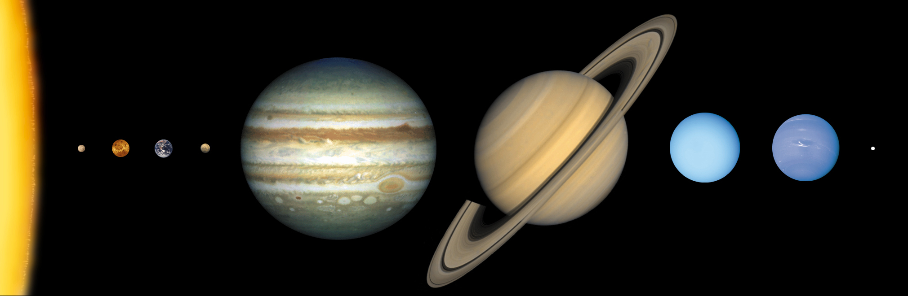

Solar System
What is The Solar System?
The Solar System forms a part of the Milky Way Galaxy, it consists of a Sun with 8 planets orbiting around it.
these planets are, in order of their distance outward from the sun: Mercury, Venus, Earth, Mars, Jupiter, Saturn, Uranus, and Neptune.
there are also over 200 moons in The Solar System, dwarf planets such as Pluto, an incalculable amount of stars,millions of asteroids, comets and meteroids.

Formation of The Solar System
The most popular theory among scientists concerning the birth of our solar system is that solar system formed approximately 4.5 billion years ago from a grativational collapse of interstellar cloud and dust. most of the collapsing mass collated at the centre to form the Sun. The remaining mass after the formation of the sun flattened into a disk and formed the planets, and other known objects.
Structure of The Solar System
After the formation of the Solar System, there was a particular order to the planets. Mercury, Venus, Earth, and Mars are terrestrial planets, and they are the closest to the Sun. The terrestrial planets are all small with solid, rocky surfaces. Following the terrestrial planets are the gas giants, Jupiter and Saturn, and the ice giants, Uranus and Neptune.
Possibility of other Solar Systems
The planetary system we subside in is the only one that is called "the Solar System". The Milky Way galaxy is said to be one of billions of other galaxies in the universe, within the Milky Way galaxy, there are countless amount of stars including Our Sun, on average, each star has at least one planet orbitting it. Meaning that potentially, there could be countless of other planetery systems to find and explore.